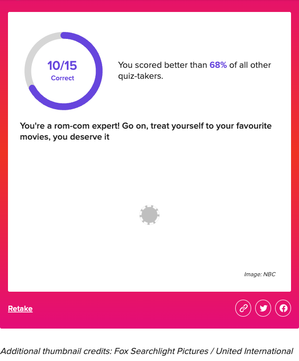
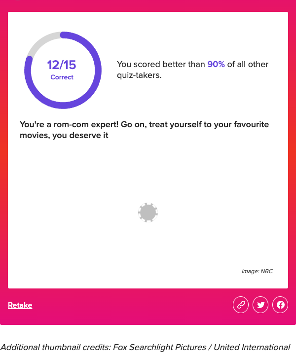

from dotenv import load_dotenv
from openai import OpenAI
import os
from playwright.sync_api import sync_playwright
load_dotenv()
if __name__ == "__main__":
client = OpenAI(
api_key=os.environ.get("OPEN_AI_KEY"),
)
with sync_playwright() as p:
browser = p.chromium.launch(headless=True)
page = browser.new_page()
page.goto(
"https://www.buzzfeed.com/elizabeth_cotton/rom-com-movies-bad-descriptions-quiz")
question_elements = (
page
.locator(".question__iRCfm")
.all()
)
for question_element in question_elements:
question_text = (
question_element
.locator(".questionTileTitle__NxVlZ")
.inner_text()
)
# Submit Question to Chat-GPT -----------------
chat_gpt_messages = [
{
"role": "system",
"content": "I'm going to give you a description of an actual film. I want you to give me the answer. Provide just the film title, nothing else.",
},
{
"role": "user",
"content": question_text
},
]
chat_completion = client.chat.completions.create(
messages=chat_gpt_messages,
model="gpt-3.5-turbo-0125",
)
chat_gpt_answer = (
chat_completion
.model_dump()["choices"][0]["message"]["content"]
)
# Identify Question Answer Box ------
question_answer = (
question_element
.get_by_label("Your Answer")
.fill(chat_gpt_answer)
)
(
question_element
.get_by_role("button", name="Guess")
.click()
)
give_up_button = (
question_element
.get_by_role("button", name="I give up!")
)
if give_up_button.is_visible():
give_up_button.click()
(
page
.locator(".gradient__R2MwP")
.screenshot(path="output/buzzfeed_romcom_decscription_quiz/chat_gpt_3_scorecard.png")
)Background
Romcoms are not my forte so a Buzzfeed quiz to guess film titles based on a bad description is a recipe for disaster. The good thing, however, is that it presents a great use case for taking advantage of Generative AI (e.g., Chat-GPT).
Aim
Not only do we want to leverage Generative AI to complete the 15 item quiz, but we want to automate the answering of each question. That is, we want to identify each item, extract the bad description, submit this to Chat-GPT, obtain an answer, submit the answer to Buzzfeed, and eventually obtain our final score. Setting this up probably took longer than manually completing the quiz, but let’s gloss over that point.
How
For this project, we use the OpenAI and Playwright packages. The OpenAI package allows us to interact with both the Chat-GPT 3.5 and 4 end-points, for which we submit out bad descriptions to. Playwright will automate our browser interactions to emulate a quiz taker.
The steps in the script are as follows:
We are using a synchronous instance of Playwright, which we direct to the quiz page.
On the quiz page, we need to locate the quiz section that contains the 15 items, which is achieved by
page.locator(".question__iRCfm").all(). This is locating the named class element and returning the list of elements contained within (i.e., the individual quiz items).For each quiz item, we extract the inner text (i.e., the bad description).
We then setup Chat-GPT. The prompt used was as follows:
I’m going to give you a description of an actual film. I want you to give me the answer. Provide just the film title, nothing else.
We are explicitly telling Chat-GPT to just provide the movie title based on the description. Without this, Chat-GPT would provide its reasoning on how it got to this answer, which is irrelevant for our purpose.
We extract the Chat-GPT answer, find the answer box for the quiz item, and click guess.
At this point, the guess will be correct and we can move on to the next item. In the event the answer is incorrect, the quiz allows us to re-attempt our answer. For this setup, we’re only allowing Chat-GPT to have one attempt at answering the question so we find the I give up! button and click it, leading us onto the next item.
After we’ve answered each item, the quiz will generate our score. We used the Playwright screenshot function to capture the scorecard, which tells us how many items we got correct and how we compared to others.
Results
Both Chat-GPT 3.5 and 4 were tested. Each performed far better than me 😅. Moreover, we see that Chat-GPT 4 outperformed 3.5 in identifying romcoms based on bad descriptions alone.


Conclusion
In conclusion, the experiment showcases the relative ease with which individuals can leverage Generative AI to essentially cheat on quizzes. While this capability may seem impressive, it poses significant risks, particularly in educational settings where tests and online quizzes are vulnerable to exploitation. Even with Chat-GPT 3.5, which performs admirably in our contrived example despite not matching the capabilities of version 4, the potential for abuse is evident. Moreover, the accessibility of Chat-GPT 3.5, being freely available, exacerbates concerns regarding the integrity of current assessment methods. It underscores the pressing need for robust security measures and ethical considerations to mitigate the misuse of AI technology in educational and other domains.